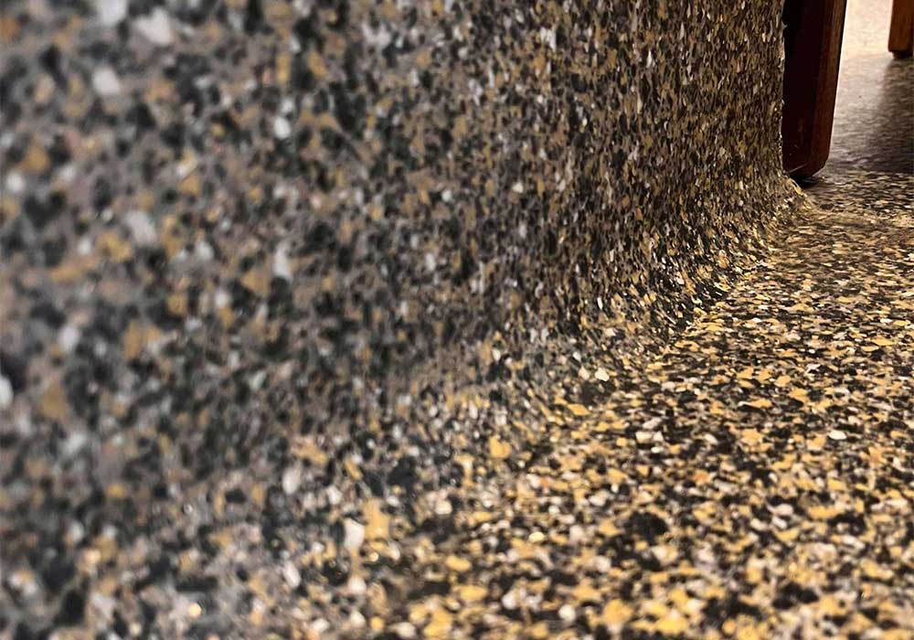

Built for hygiene.
Seamless, joint-free surfaces with integral coved skirting: nowhere for dirt or bacteria to hide.
Premium MMA resin floor and wall systems, specified, supplied and installed by our own crews. Back in service in two hours.

From cold stores to clean rooms.
Installed in more than 1,000 commercial properties across Ireland.Since 2010, AcryliCon Ireland has delivered premium seamless floors for food producers, pharmaceutical plants, retailers and leisure centres, installed by our own trained and fully insured crews. One team, from first survey to final coat.
Seamless, joint-free surfaces with integral coved skirting: nowhere for dirt or bacteria to hide.
2 hrs
Laid and back in service the same day, even overnight.
2010
Ireland's dedicated AcryliCon installer.
1,000+
Commercial properties completed nationwide.
50 yrs
Of AcryliCon experience worldwide, with production in Germany.
Proven to be one of the easiest seamless floors on the market to keep clean, with excellent slip resistance in wet and greasy areas.

Every layer chemically bonds into a single monolithic finish.
Epoxy can shut a production floor for days. AcryliCon's MMA chemistry cures in hours, so you lose a shift, not a week.
Five AcryliCon systems, each engineered for a specific environment.

A quartz-filled, trowel-applied floor with excellent slip resistance, longevity and cleanability. Coved skirting can be formed as part of the system.
Ideal for food and fish production, butchers, pharmaceutical and hospitality.
Learn more
Decorative flakes encapsulated within a chemically bonded monolithic structure. Designed for heavy foot traffic and moderate industrial use, and it looks the part front-of-house.
Ideal for retail, showrooms, changing rooms, offices and stairs.
Learn more
All floors wear, some faster than others. Built for the extremes of industrial life: truck damage, dropped loads and constant abrasion.
Ideal for bakeries, warehouses, workshops and loading bays.
Learn more
The optimum chemical bund and tanking solution, with a seamless finish. Its 94 newton strength and two-hour cure keep downtime to a minimum.
Ideal for pharmaceutical, chemical storage, utilities and data centres.
Learn more
A quartz-filled, trowel-applied coating with excellent slip resistance and cleanability for wet areas, curing in one to two hours so facilities reopen fast.
Ideal for hotels, leisure centres, pool surrounds and sports clubs.
Learn more| Feature | AcryliCon MMA | Typical epoxy |
|---|---|---|
| Cure time | 1–2 hours | 24–72 hours |
| Layer bonding | Chemical, monolithic | Mechanical |
| Install temperature | Works in cold stores | Needs a warm site |
| Repairs and extensions | Seamless tie-in | Visible joins |
| Integral coving | Yes | Often separate |
Epoxy figures are typical industry values. Cure times vary with site conditions and temperature.

Closely linked with the mark of confidence for food production floors.

AcryliCon is the world's leading flooring choice in fish processing.

The easiest seamless floor to clean, ideal for clean rooms.

Specified by Cuisine de France for 350 m² of Décor System.

Granito Flake offers every advantage for busy shop floors.

Commercial kitchens, bars and restaurants that can't afford to close.

Changing rooms, courts and pool surrounds built for heavy, wet use.

Floor and bund solutions for a fast-growing industry.

Keeping floors clean and hygienic has never been easier.


“We installed AcryliCon Décor System some six years ago. It is still performing today, and has held up to the rigours of daily production and distribution.”
“We selected AcryliCon after extensive research of a range of different suppliers, and we are delighted to have made the right choice.”
“Hard-wearing and long-lasting resin flooring on several projects over many years, from refurbishing older buildings to fitting out our new production areas in 2025.”
“A unique 2-hour cure, ultra hard-wearing and long-lasting. As the main contractor I found AcryliCon helpful and professional in their approach.”
“We have chosen AcryliCon for a number of projects and are always happy we did. They are always on hand to provide the help we need.”
Based in Clane, Co. Kildare, covering the whole island of Ireland.
Tell us about your site. We'll recommend the right system and send a full specification and quote.